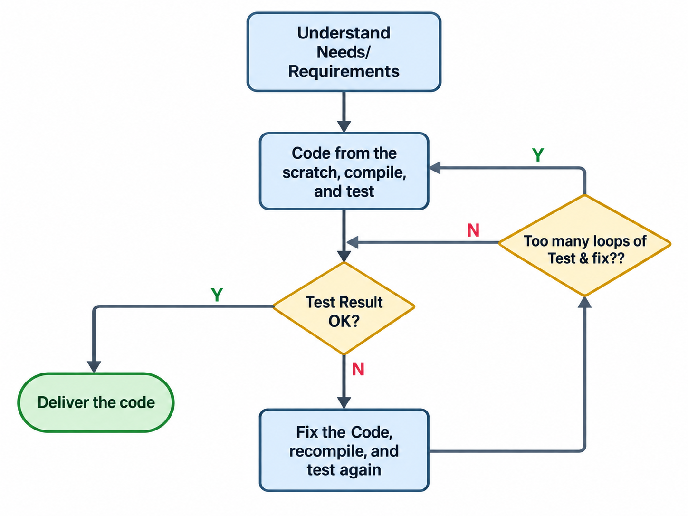
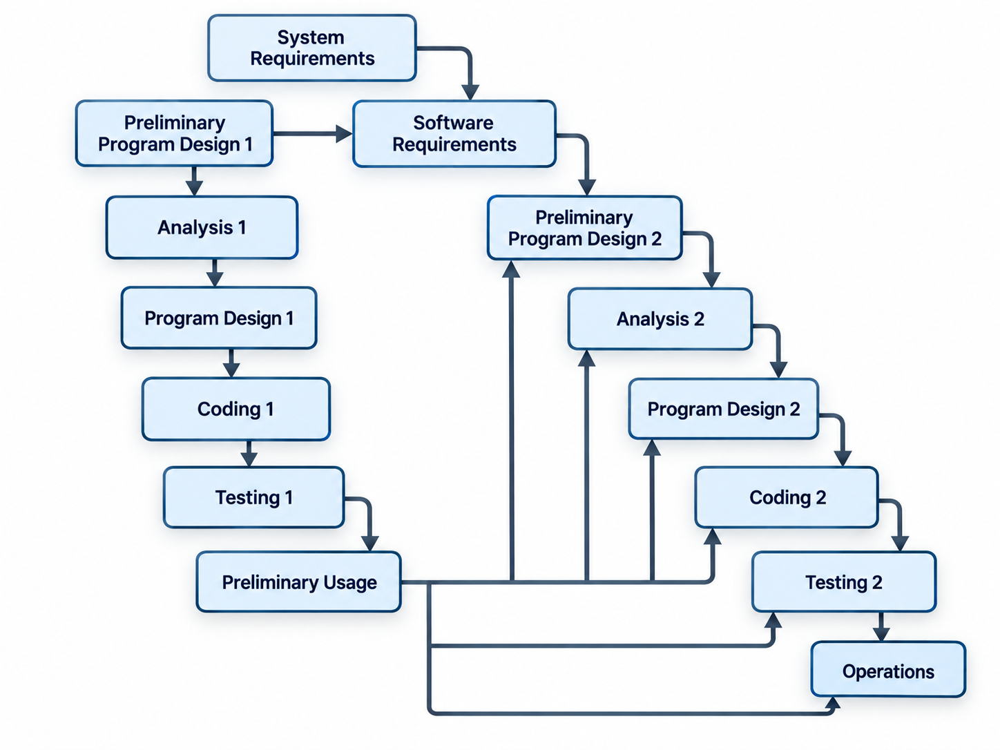
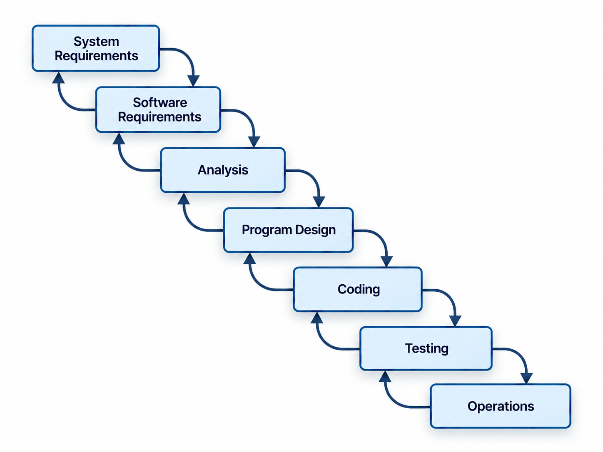

Software Quality Assurance
Troubleshooting quality in software development, both product and process quality, is an established discipline today.
Troubleshooting quality in software development, both product and process quality, is an established discipline today, yet if we compare the software industry with other engineering fields such as building construction, car manufacturing, or consumer electronics, we will find an embarrassing picture. None of us is prepared to accept to live in a building, to drive a car, or to use a TV set with as many quality failures as our best commercial software products tend to have. At the same time in the software development industry we are living with unacceptable levels of costs and delivery time incertitude. A very high percentage of our software projects are abandoned before their finalization and product delivery. Of course there are historical and technological reasons to explain this situation, but these only help justify the lack of quality, and do not offer a solution to our quality problems. So what should be our approach to a solution? As in any other problem solving activity we will:
-
Identify the event as a suspected problem
-
Verify and validate/certify the event as a real problem by comparison with the ideal (or desired) situation
-
Analyze the problem and determine:
- its attributes in terms of repeatability, frequency, severity, priority, applicability, limits, scope (range, extent), etc.
- current and potential consequences in terms of direct costs, risks, collateral damages, etc.
- whether it is a primary problem or consequence of other reported problem(s)
-
Find a pattern and study the conditions of occurrence: initial conditions, triggering event, results/consequences, and attenuating or alleviating conditions, if any
-
Find the causes of occurrence
-
Find a solution to the problem, meaning: eliminate, or at least, mitigate problem occurrence, or if not possible, remove or reduce the negative impact of its consequences
-
Implement the solution
-
Verify if the solution resolved the problem; if the problem is solved — continue with (9), if the problem persists go to (4)↩ If unresolved: return to step 4 (Find a pattern)
-
Verify if the solution did not generate some new problem(s) — if the answer is no — continue with (10); if yes then repeat (1) to (10) for each recurrent problem↩ If new problems arise: repeat steps 1–10 for each new problem
-
Document and publish the problem description and its solution for further reference
Of course, our life is greatly simplified and the costs of troubleshooting quality are diminished a lot, if we can use previous experience related to the solving of the same type of problems — our own experiences or, even better (i.e. quicker, cheaper), the experience of other professionals in analyzing and solving quality problems.
What Is Quality?
Background
Before attempting to describe what quality is, let's look at some other descriptions of quality:
Quality is the ongoing process of building and sustaining relationships by assessing, anticipating, and fulfilling stated and implied needs.
"Fulfilling Quality's Five Dimensions," 47th Annual Quality Congress Transactions, May 24–26, 1993.
It's OK for anyone to use words any way they wish. That's their privilege. But those of us who have to make quality happen must have a definition that's manageable and measurable. 'Goodness' is neither. I have always defined quality as 'conformance to requirements'; the ISO 9000 procedures use that definition also.
Crosby's understanding of the quality concept is a binary value function: quality value is either present or absent in a product. This description, with all its apparently simplistic approach, has the great advantage of being quite easy to implement in a development process or in a manufacturing model.
defines quality of a product as 'meeting customer's expectations', with two main components:
- fitness for use;
- freedom from failures.
describes the quality as an attribute of a product which may be defined only by the customer. His approach puts emphasis on three product characteristics as pertaining to quality of a product and the process used to obtain it:
- Fitness for the targeted market niche;
- Controlled variability translated in predictable uniformity;
- Manageable costs.
WOW!
Definition of Quality: "WOW!" Rationale: Suppose you were with your 'soul mate' and you were to make a purchase at a store. Immediately after walking out, your soul mate said "WOW!" — you had just encountered quality. Alternatively, suppose your soul mate said "That's OK," you had just purchased an average product or service. And if they said "Hmm...", it was below standard. While this definition relies on subjective judgment, it neatly captures the experiential dimension of quality: that quality is ultimately recognized by the receiver, not the supplier.
Description vs. Definition
I will not attempt to really define quality. My opinion is that we cannot formulate a definition of the quality concept which is at the same time rigorous [Note 1], complete, and directly applicable to the development process. So I will give only an approximate and incomplete description of the quality concept which suits my attempt to solve some of the quality assurance problems a software development organization is facing.[Note 2] So if we chose to think about quality as:
We can describe quality as: Quality of a product is an attribute that reflects the level of fulfillment of its end users' needs, associated with its level of harmlessness to anyone or anything that is a part of our environment. [Note 3]
Quality Descriptions Comparison
| Author | Quality reflects [attribute] | Quality relates to [stakeholder] |
|---|---|---|
| Juran | Meeting expectations 1. fitness for use; 2. freedom from failures |
Customer |
| Deming | As defined by the customer | Customer |
| Crosby | Conformance to requirements | Customer (implicitly) |
| ANSI/ASQC | Ability to satisfy stated and implied needs | Not mentioned |
| MIL-STD | Ability to satisfy specified requirements | Not mentioned |
| V. Gherea | 1. Level of needs fulfillment 2. Level of harmlessness |
1. Users' community 2. Everyone and everything |
[Note 1] By the term 'rigorous definition' I mean the classic concept of definition — the genus-differentia type of definition, or what logicians call: Definitio fit per genus proximum et differentiam specificam.
[Note 2] Actually all the authors who define quality are doing the same descriptive exercise, only they chose to name it 'definition' rather than 'description'. (It seems that the term definition has a more post-modernistic/academic distinction … ☺ …)
[Note 3] The 'level of harmlessness' characteristic of quality, may be implicitly included in the 'fulfillment of needs' part, but I feel that it makes the description less clear.
Conclusions
- Quality is pertaining to all the user's relevant needs. It means that the developing team should consider all the stated, implied, perceived, deduced, inferred or assumed needs — all of them. Note: These users' needs should be collected, determined, analyzed, selected, agreed upon, and then translated in some form of requirements specifications.
- The "non-technical" needs as: time to delivery, estimated price, or version, release and licensing policies should be also considered during user's needs collection and analysis process.
- Independently of the business model, the main goal of maximizing the quality of a product (for a given investment in the product's development, manufacturing and distribution) is to build and to maintain a good business relationship between the product vendor and the users' community. The bottom line is that only such a relationship will secure a constant revenue to the owners of the development organization over time and will ensure business stability. To build such a relation the best thing is to relate to users' community real needs rather than to some "artificial" specs.
- The product should be and should do everything that it is supposed to be and to do respectively, and nothing else; or, at least, nothing else that is perceived as harmful.
- This approach to define quality as: "users' needs fulfillment", as opposed to the "conformance to requirements" or to "customer's expectations/definition", makes the end user the beneficiary of the product rather than the customer (who can be a different stakeholder with other perceptions), or some product manager inside the development organization, who is even more distant from the end user by interests and understanding.
- It is a good practice to list these needs in the order of their importance as the user understands it, and it is also useful to associate to each of them an estimate of feasibility and an evaluation of the development risks. The time invested in this listing will be fully recovered throughout the requirements elicitation process and during development planning activities.
- The comparison of product's features and attributes with the users' needs and the product's harmlessness should be a continuous process over the product's life cycle.
- This approach to the quality description will be validated only if the final acceptance tests (as a minimum) will close the verification loop with the users' needs, rather than the "classic" practice to base the final tests on the requirements specifications only.
SW Development: Activities, Processes, and Models
SW Development Activities
The goal of software development is to produce a software product. This is done by a sequence of human activities which are basically the same for every software product. We have to determine the requirements of the product, we design it, we code it, we test it and we release it to its user(s). Of course, the requirements activity for the development of a little personal CD-Audio catalog and the same requirements activity for the development of the control software for an interplanetary rocket may be quite different in their approach, operations, methodology, documentation, and amount of work, but in both cases we will have an activity which deals with the product requirements. And the same applies for design, coding, testing and release activities. So we may agree that, to develop a SW product, it is necessary to execute the following basic activities in a sequential manner:
- Requirements;
- Design;
- Coding (or Implementation);
- Testing;
- Release.
And why should we do them in a sequence? Because we cannot test something we did not designed and we cannot release something we did not implement (code). Now, there will be some voices to say: "But I don't need a 'requirements activity' to code a CD-Audio personal catalog". This is simply not true — a developer may not need to document some requirements specifications for a simple CD-Audio catalog application, for personal use, written in MSAccess (for example), he or she may not even expressly need to thoroughly think about them beforehand, but to design and code the application, these requirements have to be clearly "stated" in the developer's head, at least. And the same considerations apply for all the basic development activities — design, testing, etc. But are these five basic activities enough to develop a SW product? The answer is: No, they are not enough. Even for very simple SW products we will need a little planning and other management activities, some logistical activities, and probably some other type of activities, as development environment maintenance (we should maintain our computer, the operating system, etc.), acquisitions (we may need to buy some ink for our printer), and maybe few others. And I still mentioned nothing about the concept development of a commercial software product to fit the targeted market, or about SW maintenance of legacy code. The point I want to make in this section is that it is practically impossible to make a SW product worth this nomination without somehow performing these five activities: requirements, design, implementation, testing, and release. These activities may be undocumented, uncontrolled by any standards, and even hidden by some other activities, but they are still there for every SW product we are using.
SW Development Processes and Their Design
A process is a designed or spontaneously occurring sequence of operations which produce a result. No SW engineering product to the date was the result of a real spontaneous process, whatever the hackers' community may say about it. So, the logical answer to our desired outcome — a high quality SW product — is a carefully designed and meticulously implemented SW development process. Should this process be complicated too? No, "it should be as simple as possible, but not simpler" ☺[Note 1]. It should be tailored for the specific SW project, or at least for a specific type of project. And it should be also known to and applied by all the participants to the software development and auxiliary activities. (It is fashionable to call all these people stakeholders …)
It should be very useful to have a general method for the design of any type of SW development process. Unfortunately such general method still have to be invented, to my knowledge. And, because a design method for the SW development process is missing, people are taking one of the existent SW standards and are "tailoring" them, usually omitting some of the standard's features that clearly do not apply to the their project's environment. Blindly applying a process model or a development standard to our development process will most probably solve some of our development problems. … And some tens of thousands of dollars and a few months later we will maintain the 'new' process and we will continue to look for other models and standards to solve the rest of our unsolved development and management problems. So, are our models and standards bad? Not at all, but they should be taken at their face value — none of them is a silver bullet, even if they are almost presented as such by their inventors, supporters, or fanatics. The SW development models and standards present some important and useful principles and practices of our trade, but no software development standard or process model to the date addresses all the SW development issues. This situation leaves to us only one healthy option: we should carefully analyze our problems, find their causes and then look into the standards and models (in all of them if possible) for useful principles and insights to solve our problems. And after finding these principles we should adapt them as working methods and practical procedures and integrate them in our development process. This process should also be designed with another important criterion in our minds: it should be as simple as possible for the developers, to put on them as little "process" pressure and minimum overhead as is practically feasible. This simplicity has the main goal to let the developer develop the SW — to be creative, and to have fun doing it.
But what about SW development frameworks as CMMI or ISO 9000? Couldn't their literal application solve all our quality, costs and scheduling problems at once? I certainly doubt it. Of course, applying them will not hurt our professional capacity and our maturity as an organization but it will neither solve all our problems. For example, if we have a strategic client which does not know what are his/her needs exactly, it will not help us to invest a few thousands hours of our developers' time budget, plus a few tens of thousands of dollars and upgrade from CMM Level 2 to CMM Level 4 in 12 months. Instead of this approach, we may try applying some prototyping and teamwork principles (XP [Note 2], JAD [Note 3]), combined with some version of incremental (or evolutionary) delivery. And these methods may solve our (and our client's) problem in 3 months, maybe — at much lower costs and greater satisfaction of all the parts involved.
[Note 1] The expression is attributed to Albert Einstein.
[Note 2] XP stands for EXtreme Programming.
[Note 3] JAD is the abbreviation of Joint Application Development.
SW Development Models, Standards, and Frameworks (Software Process Technologies)
The "Code and Fix" Model
This is the model of developing computer software in the early days of the computers, when the software development was considered more like a magic art than an engineering discipline.

Even today, when the programs are simple enough or small enough to be kept in the developer's mind, we can use this "code and fix" procedure:
- Understand requirements;
- Go ahead and code the entire program or the testable module;
- After it passes compilation, test it;
- Fix the "bugs";
- If there are too many "code & fix" loops, start again to code from the scratch;
- When finished, deliver the code.
Following this "natural" process model there were different attempts to define a more comprehensive model for software development, the most notable being the 9-Phase Software Development Model published by Herbert D. Benington in 1956, which precluded the Waterfall Model.


Software Quality With Solutions
Quality Problems
A List of the Usual Problems in a SW Project [Note 1]
- Project schedule slips [Note 2];
- Too many bugs and no time to correct them until the release;
- The customer (or management) asked for a change and there is no time to implement the change and stay on the schedule;
- Project's money budget is reduced with a certain percentage with little or no reduction of features or qualities;
- Product's release is changed for an earlier date with little if no changes in expected features;
- A chosen technology for the project performs worse than expected and it has to be changed during low level design/implementation activity.
Sketchy Analysis of These Usual Problems
1. Project schedule slips — Possible causes:
-
Poor planning — Overly optimistic planning;
- Developers not trained to estimate their own work schedules.
- (Middle) management reported an exaggeratedly optimistic schedule to be sure to get the project accepted/financed.
-
Student syndrome — means to delay the start of a task, eventually till delivery is imminent, due to having (initially) more than enough time to accomplish it. (It is also a corollary to Parkinson's law: Work expands to fill the time allowed).
-
Poor time management
- Little focus on the task at hand
- Organization poor focus — e.g. lots of meetings, a lot of organizational overhead time, poor communication inside the organization (people focus a lot on understanding each other), etc.
- Developers' poor focus — poor personal time management training, poor professional training for the task at hand
- Multitasking — making a developer to execute few tasks in parallel will actually lose time not gain time.
-
Some unexpected event make schedules slip considerably (e.g. The "star" programmer left the team) — meaning poor risk management.
-
Project began with poorly defined requirements, and after correcting requirements no necessary rescheduling was made (or permitted).
2. Too many bugs (poor product quality) and no time to correct them until the release.
This problem's causes are too many and too vast to analyze here, but mainly this is caused by an improperly designed development process or poorly followed development and/or management procedures.
3. The customer (or management) asked for a change without rescheduling, and there is no time to implement the change and stay on the track.
It is caused by poor customer relationship management (or by poor communication with the manager who took the decision).
4. Project's money budget is reduced with a certain percentage with little or no reduction of features or qualities.
It is caused by poor customer relationship management (or by poor communication with the manager who took the decision) — same cause as in the previous paragraph — §3.
5. Product's release is changed for an earlier date with little if no changes in expected features.
It is caused by poor customer relationship management (or by poor communication with the manager who took the decision) — same as in §3.
6. A chosen technology for the project performs worse than expected and it has to be changed during low level design/implementation activity. It may be caused by:
-
Poor understanding of the requirements (or faulty/incomplete requirements);
-
Poor design decisions, caused by
- The choice of incorrect design criteria or of incorrect priorities of the design criteria. For example choosing of a technology because it is better known by the developers over the criteria of fitness of the technology with the architecture of the product.
- Insufficient experience of the designer/architect with the product environment or with the technologies to be used.
[Note 1] By no means this list is the complete inventory of all the problems that may arise in a SW development project, but I think that the listed problems are the most important and frequent ones.
[Note 2] Delivery time is a quality characteristic of a product in our quality model — and in the real world too.
Consequences of the Quality Problems
There are three possible major effects of any serious SW product quality problem:
- SW development project fails (is canceled) so there is no product at the end.
- The product makes it to its users but they do not use it, or
- The users are using the product and are paying the consequences of the poor quality: lost time and poor productivity.
And the final outcome of any poor quality product is that a competitive product of better quality replaces it.
Quality Principles [Note 3]
-
Quality is a relative and human concept. It is neither a law of nature, nor a divine datum.
-
Quality applies to products (objects) and to processes (activities), and it implies a supplier and a receiver (or user, customer, beneficiary). Both supplier and receiver may be single individuals or collectives, organizations, groups of people.
-
Quality concept, besides being relative it is also a generic concept. In order to define and to measure it, for a specific product or process, we will need to define some specific quality attributes. (As reliability, usability, conformance to needs, harmlessness, users' satisfaction and/or, more specific to a (software) product: maintainability, portability, testability, upgradeability, etc.)
-
Quality attributes are build into a product or into a process by changes the supplier (or its agents) makes in the environment. But not every change generates or improves quality [Note 4].
-
Quality improvement is perceived as progress by the receiver of quality. The reciprocal is also true: degradation in quality is perceived as a regressive event.
Quality vs. Delivery Time
One of the most spread clichés of the SW development process management is that the quality of a product comes at the price of the time spend to develop this quality, or at the price of development costs, or both. This is a misconception for our model, because we consider delivery time and the price of the SW (related to the development costs) as quality attributes of a SW product. And, as quality attributes they are taken into account explicitly at the time of requirements specification and at the time of SW design — at the same level with other quality attributes. And how exactly this works? Very simple to explain it. Of course is not always very simple to implement it, meaning not every requirement (including delivery time requirements, or price and development costs requirements) is always feasible. But this is true for every quality attribute — they are not all of them feasible for every project every time. And what are we doing in this case if we want the product developed and we know that we do not have all the needed resources? There are few solutions to this problem:
- We look at other design (technical) solution — other processor/computer, other operating system, or other language, other development environment, architectural approach, design model, etc.
- We consider other management methods or solutions: project management methods, staffing solutions, time management methods (including personal time management), etc.
- We compromise. For example: if we need a reliability of 99.99% (uptime) for our system we will need to implement some intelligent redundancy scheme into it, so we may need some extra time to make requirements, design, implement and test this redundancy scheme. We may also need to train some of our people to do it, or to take an external consultant. All this may overflow our authorized money and time budgets. Or, as an alternative, we may decide that 99% uptime is enough (in agreement with our users, or other relevant stakeholders) and make the system without a redundancy scheme.
Our solutions 1 and 3 have in fact a name. They are called: quality by design method. The only thing I am adding to it, is that I am introducing the delivery time and development cost as quality attributes explicitly.
[Note 3] I am using this concept as in the next principles:
- Primal cause, origin, source.
- Primary law on which other laws are based, fundamental law.
- Knowledge, doctrine, precept, tenet, elementary rule, or law of a discipline, art, or thing.
- Proposition accepted as a base for a rationale.
- Constituting element of a thing (object, idea, article, fact): e.g. active principle.
[Note 4] "If it's not broke, don't fix it" is true if it means: "Don't change if it's not necessary" (for the un-necessary improvement of quality). Meaning — Don't make changes only for the sake of the changes.